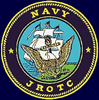

Willard High School NJROTC


Welcome to the Willard
NJROTC Homepage
NJROTC Homepage
Willard High School's NJROTC program teaches students discipline, respect, self confidence, honor, courage, and commitment. Cadets learn about military life, as well as everyday skills such as health, and physical fitness. Cadets have the chance to compete for promotions, as well as performing jobs that military personnel do. These jobs include: Administration, Athletics, Academics, Supply, Public Affairs, Information Technology, and Operations. The skills that the cadets learn can help them if they choose to join the military, or if they choose a career in a civilian field. Dedicated cadets come out of the unit as more driven individuals striving to do their best.